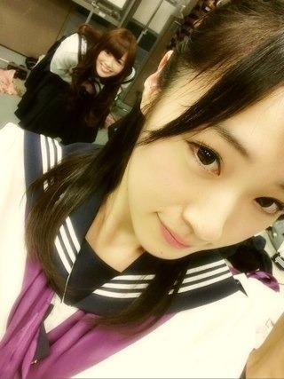

2012/1219Wed（´-`）.｡oO(かずみん×123
12月19日＼(^o^)／
いつも応援ありがとうございます！
今日は4thシングルの発売日です！
もうGETしてくれた方〜( ´ ▽ ` )ノ？
ぜひ感想を聞かせて下さい！
個人PVは頑張ったので
見て欲しいなぁ(^^)
そしてありがたいことに、今回は
制服のマネキン
指望遠鏡
渋谷ブルース
やさしさなら間に合ってる
と4曲も歌わせてもらってます(T_T)
私はレコーディングが
一番好きなお仕事なので、
本当に嬉しかった(T_T)(T_T)
自分の声がCDになるなんて
夢のようです。
曲によって、歌い方がちょっとずつ
変えてみたのでよかったら
探してみて下さい(*^^*)
ちなみに私の大好きな
"やさしさなら間に合ってる"は
始まる前に歌謡曲の動画を
みんなで見て、
スタジオを薄暗くして雰囲気を作って
レコーディングをしたんです。笑
ガジ楽しかった＼(^o^)／
みなさんいっぱい聞いてくださいね！
---------
握手会まで日にちが迫って来ました！
なんと！京都の全握第六レーンは
また飴と鞭です*\(^o^)/*イェーイ♪
ひなちゃんがかずみんのファンの人は
みんないい人や！
と毎回言ってくれます(^^)
嬉しいな♪
みんなで楽しい握手会に
しましょう( ^ω^ )

昨日の火曜曲の写真♪
まいやんが遠くに...(^_^)
そして
CAの制服でーす！
制服のマネキンをどうか
よろしくお願いします＼(^o^)／
--------
それでは、明日のお台場のライブ！
ガジ頑張りまいやん( ´ ▽ ` )ﾉ
久しぶりのライブ
楽しみだなぁ...(^_^)
それでは、今日はこの辺で( ^ω^ )
おやすみなさい...☆
2012/12/19 23:00


コメント(412)
個人PVみたよ！！
めっちゃよかった～＼(^o^)／
明日はライブだね！！
いくよー！！
めっちゃたのしみ！！
CD買ったよ！DVDは休みの日にゆっくり見るわ！
「やさしさなら間に合ってる」ヤバイ！！！
めっちゃいい！昨日からこればっか聴いてるよ！！！
昨日は髪型違ったね、あれもまたイイ！
明日ガジガンバってね！
２７日は昼と夜両方行くから（笑）
応援してます
この頃ブログ更新しとるね！
質問
オススメのアプリは？
かずみん大好きー
制服のマネキン
ゲットしたよ♪(*^-^*)
個人PVすごく面白かった
ネガティブ発言はらしくないね
バッタが跳んで入ったらいいっていう発想素晴らしいね
途中セクシーショットもあったね（笑）
CD買ったよ！！
個人PVめっちゃよかった
写メ可愛い(｡≧ω≦)ﾉ
☆☆☆(なお・ω・やん)☆☆☆
かずみぃぃぃぃぃぃん！
まだ初回盤買ってないから買ったらみるね(*_*)
とりあえず個別は今回はかずみんのしかかってないよ♪
単推しなう(笑)
明日いくねー(*^^*)
久しぶりのライブたのしみだぜぜぜぜぜい(*^^*)
それじゃあまた明日！
それじゃあこの辺で！
今日はお疲れ様(*^^*)
明日も頑張ろう
愛羅武勇
かずみんお疲れ様！
今年もあと少し！
頑張ろp(^-^)q
「渋谷ブルース」いいですね！何よりかずみんの
歌声が沢山聴けるので！！
苦手克服はこれから観ますねー！！
乃木どこ？でみんな荒行頑張ったから、
大ヒット間違いなし！！！
やさしさなら間に合ってるの歌ってる部分教えてください
なんか全部かずみんが歌ってる感じがする！
頑張って！
昨日の見逃した泣ける(ノд<。)゜。
ビデオとれてなくて……
妹にテレビ独占されて………………
個人PVみたよ(o^o^o)
ダンゴムシのが笑えた(笑)
他のみんなのも面白かったなwww
またコメントするかも？
けど、CM開けいきなり始まって、
テレビが乃木坂にジャクされたかと思った(笑)
明日いけなくなっちゃった…
CD聞いたよ～
CDで聞いてもさらに良いね♪
握手会待ってました
絶対行くから待っててね.。oO
昨日フラゲして見たわ
アメイジング昆虫王国おもろかった
ばっちゃん最高やわ(笑)
曲まだ聞けてない、ごめんな泣
明日ライブ楽しんでな
俺いかれへんけど、ちゃんやま(やまちゃん)行く見たいやから任せるわ
最近リンゴ姫が暴走モードなんでどうにかして(笑)
ほなねﾉｼ
高山さん頑張ってね！
そして苦手克服PVみたよ！！
ホントはネガティブ発言には笑った(^○^)
最後はバッタもしっかり掴めてたし頑張ってるのが伝わったよ！
曲もこれからいっぱい聴かせてもらうよ！
渋谷ブルース良かった
この曲を歌う二人をライブで見たい
今日 新宿のＴＯＷＥＲ ＲＥＣＯＲＤ
行ったけど、タイプＡの売れ行きが良かったみたい
ＣＡの格好 みんな素敵で惚れ直した
ゆーたんなう
昨日フラゲしたんだけど
どの曲もやばたんだわ(*^□^*)
一番なんて無理だし
だけどブルースややさしさは聴くほど耳から離れないメロディーだよ(*^□^*)
苦手克服はまだ見てないけど…じっくり観ますわ！
飴と鞭……楽しみ＼(^O^)／
今日も1日お疲れちゃん
ぢゃぁ
(一実o^∀^o46)
↑
これ大事
お台場のライブにいけないけど、頑張ってください。
応援してます。
かずみーーーーん。
可愛いっす！
タイプC超楽しみ！かずみんの個人PV早く見たい！
お台場のライブ、ガジ頑張ってね！
ポジティブSAY！
明日も行くつもりだよ。今日終業式だったから明日から冬休みだー‼
明日が楽しみだ‼
bay
やさしさなら間に合ってると渋谷ブルースはマジでいい曲←
相変わらず歌うまいですね！
とりあえず飴と鞭レーン行きます(笑)
色々話しましょう
そして明日のお台場行くよ！
がんばれ(^.^)
一実さ～ん
明日Winter Live見に行くね(・ω・)
頑張れ～笑笑
曲どれも良かった！
しぶや～しぶや～しぶや～♪
やー渋かったっす w
んじゃね(笑)
ひかるん♪
かずみんの歌声に注目して聴いてみるわ
個人PVもまだ見てないからガジ楽しみ！
ライブガジ頑張ってぇ♪
明日のライブ行かれへんけど、応援の気持ちだけ送っときます。
もうすぐ握手会やね。今はそのコトずっと考えてます！
楽しみ楽しみ(^O^)
身体に気を付けてくださいね。
ほな、また(*^o^*)
握手会が待ち遠しいですね！
でわ！
今日も
今日は「
もちろん
でも、
まだ
時間が
感想も
あっ
では今日はここら辺で
明日は
行くから
一緒に
たーちゃんより
今日は制服のマネキンの発売日でしたね
僕もCD買いましたよ
どの曲もみんな良い曲で何回も聞いてます
制服よく似合ってますよ
明日のお台場ライブ頑張ってね
そして楽しんできてね
それではまた❕❕
握手会飴と鞭だね＼(^o^)／私もかずみんに会いたいなぁ～( ´_ゝ`)
明日のライブ頑張ってね♪私は仕事休みだー！！！(o^O^o)
『やさしさなら間に合ってる』・『渋谷ブルース』めっちゃいい！！！
ドラマの主題歌みたいというか、なんか聞いた後、しばらく動けなかった。
ますますかずみん好きになったというか、かずみんファンでよかったって思ったよ(^O^)
お台場ライブで披露あるのかな？
行くからぜひ披露して欲しいなぁ～。
ヘビロテなうヽ(・∀・)ノ
虫頑張ったねー
俺なら逃げ出すは←
今週京都は行けないけど、名古屋は行くよ♪
もちろん、買ったよ!!
俺、火曜曲!のかずみんの髪型が女性の髪型の中で、1番好きなんです!!
へばっまずな(^-^)/~~
「やさしさなら間に合ってる」の歌い方ってああゆう指示なの！？
最初違うCD聴いてるかと思ったわw
今週は握手会2回もあるから楽しみだ！
どっちも行くからよろしくね！(^q^)
制服のマネキンのPVかっこよかった
他にも苦手なものってある？？
でも似合ってていい感じだったよ(^o^)v
とりあえず個別の時の髪型はツインにしてほしいな←笑
制服のマネキン発売だね&sF9D7;
やっとかって感じです
全て必ずチェックするぜぇ
明日のライブガジ頑張ってね☆
アメイジング～
最近かずみさん可愛いね。
明日ライブ、ガジ楽しみです！＼(^o^)／
次は八福神目指して頑張って下さい。
かずみんこんばんは！
制服のマネキン買ったよー
苦手克服PV見たよ＊
おもしろかったー♪
渋谷ブルースが入ってる通常版も買いたいな＊
では、握手会がんばってね！
ポジィティブSAY!
ライブ頑張って下さい(´・ω・`)
俺も虫は苦手だから気持ち悪かった！(笑)
ごめん、この間行けそうだったから狙ってみた＼(^o^)／
初チャレンジww
いつもと比べるとすごい適当に見えるけど許して
ここでちゃんとコメするから（笑）
CDはABCと通常盤タイプ買ったよ！
渋谷ブルースまだ聞けてないんだ＞＜
早く聞きたい♪♪
やっぱ制服のマネキンいいね!!
あと指望遠鏡は普通に好き(*･ω･*)/
やさしさなら間に合ってるはすごいかずみん好きそうだなって思った\(//∇//)\
かずみんほんとにレコーディング好きだよね！
俺もかずみんの歌声ほんとに大好きだから(←ガチでw)かずみんの声がいっぱい聴けて嬉しいよ(ﾉ*･ω･)ﾉ
飴と鞭で握手会とか懐かしいね～
たしかぐるかー全握だったっけ？
枚数少なかったけどマジ楽しかったわ(((o(*ﾟ▽ﾟ*)o)))
また行きたいな～飴と鞭レーン（笑）
写メ鬼かわっ
こんなCAいたらフライト行かんでずっと話してたいわ笑←厄介
でも出来るCA感出てるよっ!!
火曜曲髪型変わり過ぎてて一瞬わかんなかったww ごめんなさいwwwwww
まぁすぐちゃんとわかったけどね
ダンス良かったよ！
キレあったし。
でもPVの時がすごいキレあったからかずみんならもっといける気がした！笑
余計なお世話だったらごめん＞＜
明日のライブ、俺は学校だしテストあるから行けないけどケガしないように、全力出せるように頑張ってね
かずみん不足なう←泣
☆☆☆(なお・ω・やん)☆☆☆
今日は12/19！制服のマネキン発売日〜！！
アメイジングアメイジングアメイジングー＼(o￣▽￣o)/
全タイプ買ったよ！！
...でもね、、、まだ通常盤、家に届いてないんよね ...
...そんでもって、、、かずみんの写真当たらなかった ...
ショックー∑(O_O；)
だから、『渋谷ブルース』聴けてないんよ〜｡｡(〃_ _)σ∥
、、、その代わり苦手克服見たし！！
『やさしさなら間に合ってる』も聴いたよ！！(*`∀´*)ﾉ
苦手克服は、、、めっちゃ面白かった〜(笑)(｡-∀-) ﾆﾋ♪
ダンゴムシね ...俺も小さい頃は全然平気だったんだけどね、もうだめだよね(笑)
かずみん、すごーい！！苦手克服(？)やん！！！v(｡-∀-｡)ﾌﾞｨﾌﾞｨ
...でも、かずみんが実はネガティブなのわかっちゃったけどね〜(笑)(￣∀￣;)
ポジティブかずみんもすきだけど、、、ネガティブかずみんも大好きー！！！
『やさしさなら間に合ってる』は、すごい心が暖まる！！
乃木坂の歌は本当に、めっちゃいい歌ばっかりだから、いっつもすごいカップリングも、楽しみなんよ！！ε===(っ≧ω≦)っ
あ〜〜早く『渋谷ブルース』聴きたいよーｲｴ───(σ≧∀≦)σ───ｨ
聴いたら、また感想書くね！！
あ ...ちなみに、かずみんが『やさしさなら間に合ってる』でソロで歌ってるのって、最初と最後のところ？？
教えて〜(*￣∀￣)ゞ
じゃあ、かずみん今日もお仕事お疲れ様！！
明日のお台場ライブガジ盛り上がろねーヾ(￣∇￣=￣∇￣)ﾉ
かずみんのこと、ずっと応援してるよ〜！！！
ポジティブSAY！！
CD買ったよ！！
まだ個人PV観てないので
これから観るね！
CAの制服似合うね(^-^)/
お台場のライブガジ頑張ってね！
コメントする